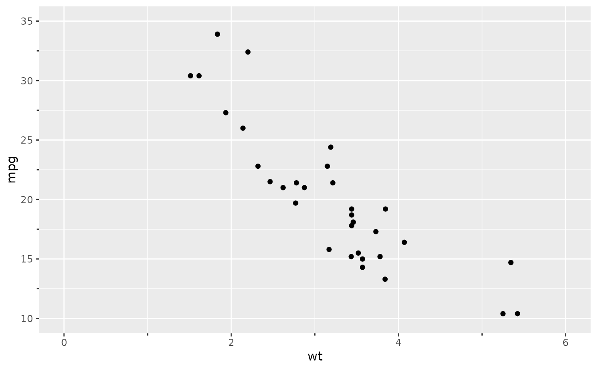
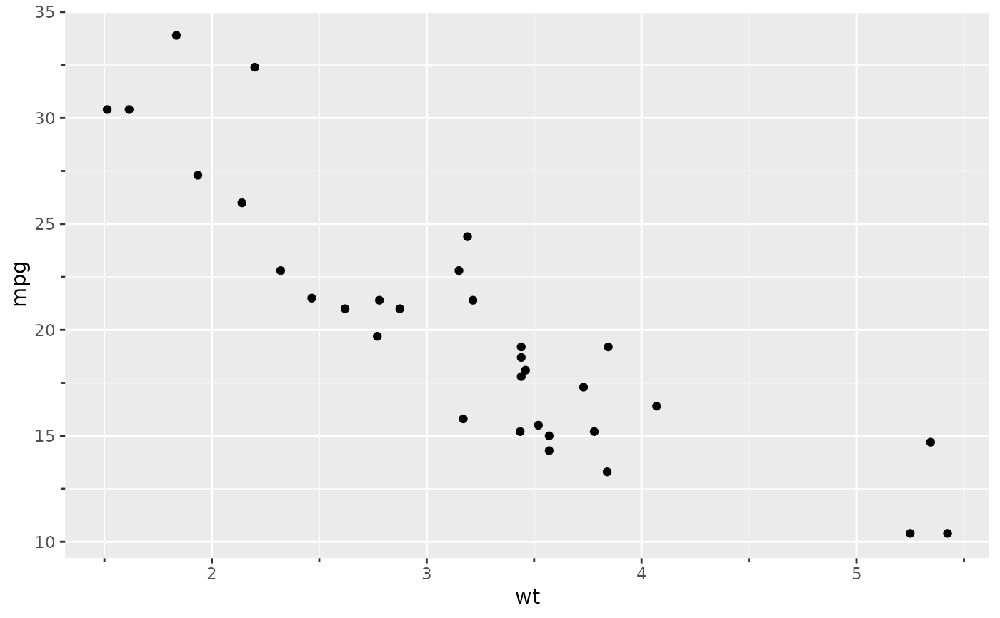
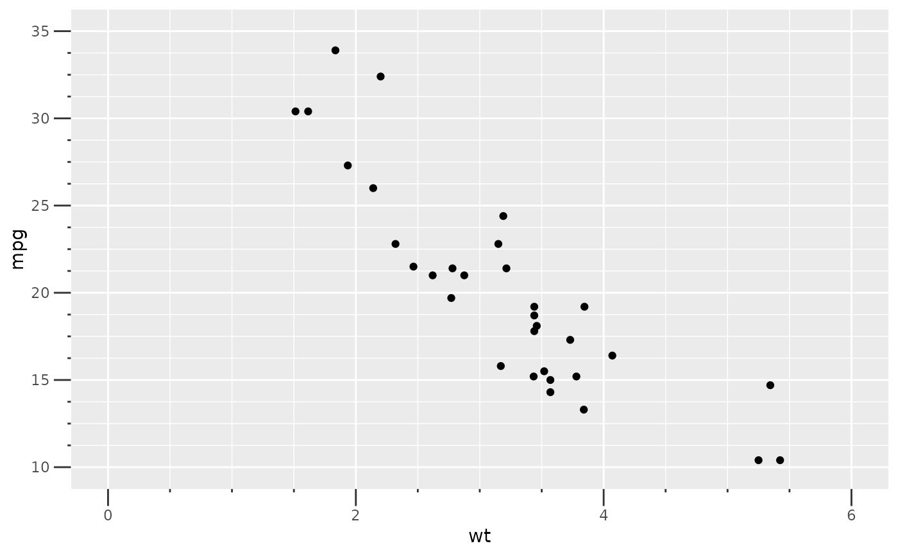
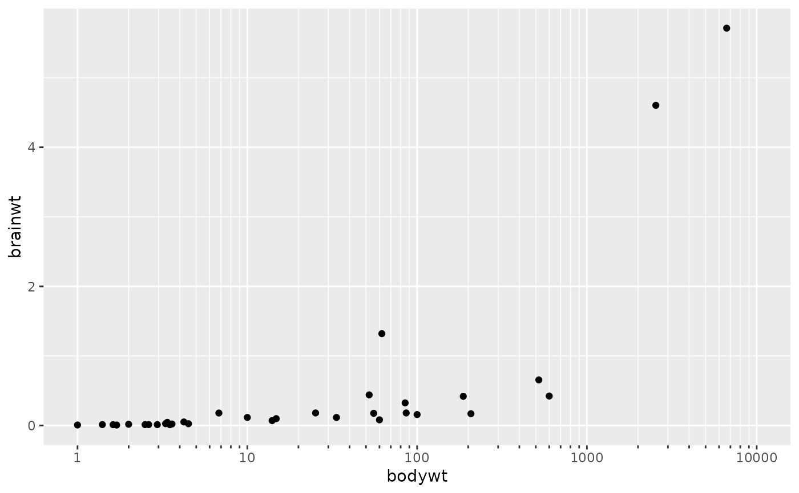
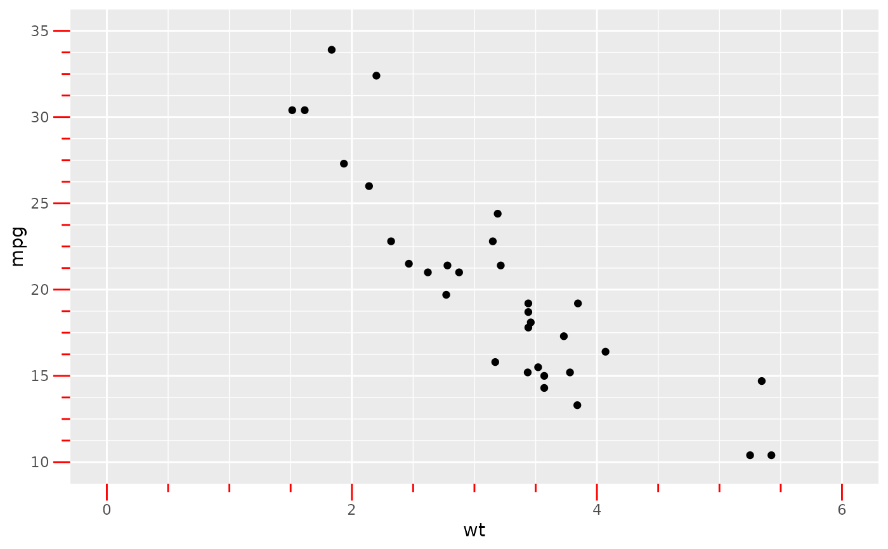

Axis guide with minor ticks
guide_prism_minor.RdThis guide is like the standard guide_axis, but
with minor ticks.
guide_prism_minor( title = waiver(), check.overlap = FALSE, angle = NULL, n.dodge = 1, order = 0, position = waiver() )
Arguments
| title | A character string or expression indicating a title of guide.
If |
|---|---|
| check.overlap | silently remove overlapping labels, (recursively) prioritizing the first, last, and middle labels. |
| angle | Compared to setting the angle in |
| n.dodge | The number of rows (for vertical axes) or columns (for horizontal axes) that should be used to render the labels. This is useful for displaying labels that would otherwise overlap. |
| order | Used to determine the order of the guides (left-to-right, top-to-bottom), if more than one guide must be drawn at the same location. |
| position | Where this guide should be drawn: one of top, bottom, left, or right. |
Details
The number of minor ticks can be changed using the minor_breaks
argument. Control the length of minor ticks by setting
prism.ticks.length to a unit object using
theme, for example:
prism.ticks.length = unit(2, "pt"). The major tick lengths
are adjusted using the standard axis.ticks.length.
Examples
library(ggplot2) ## base plot base <- ggplot(mtcars, aes(x = wt, y = mpg)) + geom_point() ## add minor ticks to x and y axes base + scale_x_continuous( limits = c(0, 6), guide = "prism_minor" ) + scale_y_continuous( limits = c(10, 35), guide = "prism_minor" )## you can also use the guides function to add minor ticks base + guides(x = "prism_minor", y = "prism_minor")## adjust number of minor ticks by adjusting minor breaks base + scale_x_continuous( limits = c(0, 6), minor_breaks = seq(0, 6, 0.5), guide = "prism_minor" ) + scale_y_continuous( limits = c(10, 35), minor_breaks = seq(10, 35, 1.25), guide = "prism_minor" )## adjust the length of major ticks with the usual axis.ticks.length element base + scale_x_continuous( limits = c(0, 6), minor_breaks = seq(0, 6, 0.5), guide = "prism_minor" ) + scale_y_continuous( limits = c(10, 35), minor_breaks = seq(10, 35, 1.25), guide = "prism_minor" ) + theme( axis.ticks.length = unit(10, "pt") )## adjust the length of minor ticks with a new prism.ticks.length element base + scale_x_continuous( limits = c(0, 6), minor_breaks = seq(0, 6, 0.5), guide = "prism_minor" ) + scale_y_continuous( limits = c(10, 35), minor_breaks = seq(10, 35, 1.25), guide = "prism_minor" ) + theme( axis.ticks.length = unit(10, "pt"), prism.ticks.length = unit(5, "pt") )## to get log10 minor ticks just use a log10 scale and set the minor breaks ggplot(msleep, aes(bodywt, brainwt)) + geom_point(na.rm = TRUE) + scale_x_log10(limits = c(1e0, 1e4), minor_breaks = rep(1:9, 4)*(10^rep(0:3, each = 9)), guide = "prism_minor")## change colour with the usual axis.ticks element base + scale_x_continuous( limits = c(0, 6), minor_breaks = seq(0, 6, 0.5), guide = "prism_minor" ) + scale_y_continuous( limits = c(10, 35), minor_breaks = seq(10, 35, 1.25), guide = "prism_minor" ) + theme( axis.ticks.length = unit(10, "pt"), prism.ticks.length = unit(5, "pt"), axis.ticks = element_line(colour = "red") )